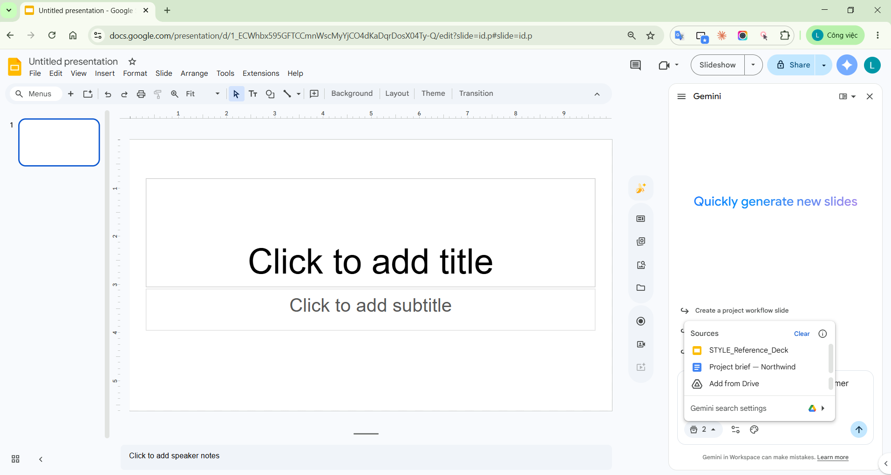
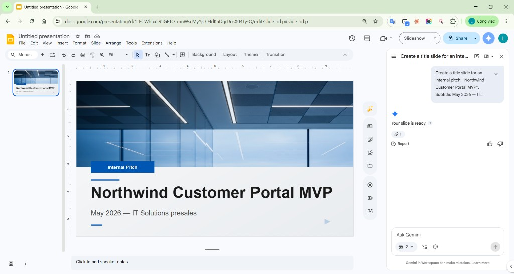

Tạo cả presentation native và chỉnh sửa được bằng Gemini trong Google Slides
Tổng quan tính năng tháng 6/2026, hướng dẫn full-deck, bài thực hành Northwind và góc nhìn ứng dụng vào công việc hằng ngày.
1. Tổng quan tính năng
Gemini trong Google Slides nay có thể nhận một prompt để tạo presentation nhiều slide với text và hình ảnh, dựa trên file Drive và các nguồn liên quan. Kết quả là các slide fully editable: người dùng tiếp tục sửa text box, shape, layout và hình ảnh trong Slides, thay vì nhận một file ảnh phẳng khó bảo trì.
| Năng lực | Ý nghĩa thực tế |
|---|---|
| Tạo full presentation | Từ mô tả mục tiêu, Gemini hỏi thêm thông tin, lập plan rồi tạo toàn bộ deck. |
| Grounding bằng nguồn | Thêm nhiều file Drive; Gemini cũng có thể gợi ý file, email hoặc chat liên quan để người dùng chủ động chọn. |
| Match presentation style | Gắn một deck hiện có làm style reference để bám tone, bố cục và look-and-feel mong muốn. |
| Plan trước khi tạo | Người dùng xem Overview, Sources và từng bước/slide; có thể sửa, thêm hoặc xóa slide trước khi Approve. |
| Native và editable | Sau khi tạo, sửa thủ công hoặc nhờ Gemini tinh chỉnh từng slide, thêm slide, thêm/sửa ảnh. |
Điều kiện sử dụng và rollout
- Nền tảng/ngôn ngữ: desktop, English only tại thời điểm tài liệu Help được kiểm tra.
- Rollout: extended rollout cho cả Rapid Release và Scheduled Release bắt đầu 29/06/2026; thời gian hiển thị có thể dài hơn 15 ngày.
- Gói: Business Standard/Plus, Enterprise Standard/Plus, Google AI Pro/Ultra, Google AI Pro for Education và AI Expanded Access.
- Admin: Google ghi rõ không có admin control riêng cho tính năng này.
- Hạn mức: promotional access với mức tạo multi-slide cao hơn được công bố kéo dài ít nhất đến 01/08/2026; sau đó có hạn mức theo người dùng.
2. Các bước tạo presentation bằng Gemini
- Trên máy tính, mở Google Slides.
- Ở start screen, bấm Presentation; hoặc trong một presentation trống, chưa có slide hiện hữu, bấm Ask Gemini ở góc phải.
- Trong side panel, mô tả topic, mục tiêu, audience, số slide, cấu trúc và yêu cầu hình thức. Ví dụ chính thức: “Create a 5-slide presentation on quantum computing for a general audience with a modern design.”
- Tùy chọn: Add sources → Add from Drive, chọn một hoặc nhiều file rồi bấm Add. Có thể cho Gemini tìm nội dung liên quan từ web, Drive, Chat hoặc Gmail tùy source settings.
- Tùy chọn: Match presentation style → Add from Drive, chọn deck mẫu rồi bấm Add.
- Trả lời các câu hỏi làm rõ về tone, style, content hoặc audience; có thể skip.
- Bấm Next. Gemini tạo plan gồm Overview, Sources và Steps — outline nội dung từng slide.
- Sửa plan nếu cần: click title/mô tả để edit; hover để Add step hoặc Delete; bấm Update plan để tạo lại outline sau khi thay đổi.
- Khi plan đạt yêu cầu, bấm Approve.
- Giữ tab Google Slides và side panel mở trong vài phút đến khi deck hoàn tất. Có thể chuyển sang tab/cửa sổ khác nhưng không đóng Slides hoặc Gemini panel.
- Kiểm tra fact, source và khả năng editable. Sau đó sửa tay, yêu cầu Gemini tinh chỉnh từng slide, tạo thêm slide hoặc thêm/sửa ảnh.
3. Bài thực hành: deck Northwind theo format cụ thể
Bài demo dùng một tình huống presales giả lập: Northwind Logistics cần phê duyệt MVP customer portal trong 10 tuần. Nguồn nội dung là Google Doc từ 02-source-doc-project-brief.txt; style reference là STYLE_Reference_Deck.
| Slide | Format bắt buộc |
|---|---|
| 1. Title | Project name, “Executive approval brief”, July 2026. |
| 2. Executive summary | Problem, proposed MVP, decision requested. |
| 3. Current-state problem | 3 pain points + 1 prominent metric. |
| 4. Proposed solution | 2 cột; bên phải là flow native Customer → Portal → TMS REST API. |
| 5. Scope & plan | In/Out of scope + horizontal 10-week timeline. |
| 6. Close | 3 KPI cards, 2 risks, 3 numbered next steps. |
Prompt chính (rút gọn; bản đầy đủ nằm trong demo-assets):
Create a fully editable 6-slide presentation for an internal executive review titled "Northwind Customer Portal MVP". Audience: delivery director, presales lead, operations lead, and solution architect. Goal: approve a 10-week MVP discovery and delivery plan. Ground all facts in "Project brief — Northwind". Match "STYLE_Reference_Deck". 16:9, white background, navy/cyan accents, concise executive language. Use native editable text boxes, shapes, diagrams, tables, and charts. Do not invent financial figures, customer quotes, or commitments.
4. Quá trình và kết quả thực hành
Đã kiểm chứng Bộ ảnh hiện có ghi lại một lần thực hành thật trên Google Slides với Gemini: gắn source, gắn deck style, tạo/Insert deck Northwind 5 slide, Enhance layout và kiểm tra đối tượng editable.
Chưa kiểm chứng trên tenant này Các ảnh đó dùng UI tạo từng slide trước rollout full-presentation; vì vậy chúng không chứng minh các màn hình mới như follow-up, plan, Update plan và Approve. Phiên trình duyệt dùng để rà soát bài hiện dừng ở màn hình đăng nhập Google, nên không thể chạy lại bằng tài khoản của người dùng.
Quy trình thực tế đã chạy
- Mở Gemini panel trong Slides.
- Gắn
STYLE_Reference_DeckvàProject brief — Northwindqua Sources. - Tạo từng slide bằng prompt tiếng Anh, xem preview rồi chọn Insert.
- Hoàn thành deck 5 slide: title, problem, solution, timeline/scope và next steps.
- Dùng Enhance để đổi layout; thử tạo chart/diagram; click text box và đối tượng để kiểm tra editability.
- So sánh với Beautify as image để thấy vì sao luồng native phù hợp hơn cho deck cần cập nhật.

images/step-03-add-sources-drive.png
images/step-06-slide-inserted-editable.png
images/step-11-five-slide-thumbnail-strip.pngNhận xét từ đầu ra đã quan sát
- Đúng format cơ bản: deck giữ hệ màu xanh/trắng, title hierarchy và footer tương đối nhất quán khi có style source.
- Grounding có ích: nội dung problem/solution lấy được các chi tiết TMS, support workflow và chỉ số trong brief.
- Editable là giá trị chính: text box, layout và các thành phần có thể chọn/sửa sau Insert; deck vẫn tiếp tục được bởi PM/designer.
- Vẫn cần review: density chữ, timeline/chart và wording executive cần chỉnh tay; mọi số liệu phải đối chiếu brief.
- Không nên đánh đồng với Beautify: Beautify as image hợp poster tĩnh hơn, nhưng bất tiện cho deck phải cập nhật số liệu thường xuyên.
5. Demo full-presentation cần chụp những gì?
File HUONG-DAN-DEMO-CHUP-ANH.md có thao tác từng click và tên ảnh. Bộ ảnh tối thiểu nên chứng minh đủ bốn lớp: input, planning, generation và editability.
| Ảnh | Bằng chứng cần thể hiện |
|---|---|
full-01-entry-point.png | Presentation trống + Ask Gemini. |
full-03-add-content-source.png | Project brief đã được thêm từ Drive. |
full-04-match-style.png | Deck style reference đã được chọn. |
full-05-follow-up-questions.png | Gemini hỏi và người dùng làm rõ audience/tone/decision. |
full-06-plan-overview-sources.png | Overview + Sources đúng. |
full-07-edit-outline.png | Outline 6 slide sau khi sửa và Update plan. |
full-08-approve-generating.png | Approve và trạng thái đang tạo deck. |
full-09-complete-deck.png | Filmstrip đủ 6 slide. |
full-10-native-editable-proof.png | Khung chọn/handles của text box, shape hoặc diagram. |

images/full-07-edit-outline.png
images/full-10-native-editable-proof.png6. Ý kiến cá nhân: áp dụng vào công việc hằng ngày
Tôi xem tính năng này là một “first-draft engine có kiểm soát”, không phải người thay thế designer hay người chịu trách nhiệm nội dung. Lợi ích lớn nhất xuất hiện khi công việc đã có brief trong Drive và deck brand chuẩn, nhưng cần biến chúng thành bản trình bày có cấu trúc trong thời gian ngắn.
| Công việc | Cách áp dụng | Lợi ích |
|---|---|---|
| Presales / proposal nội bộ | Brief + style deck → plan 6–10 slide → review outline trước khi tạo. | Rút ngắn thời gian từ tài liệu thô đến bản họp phê duyệt. |
| Weekly project review | Ground bằng status Doc/Sheet, yêu cầu format cố định: progress, risks, decisions, next steps. | Giữ cấu trúc báo cáo nhất quán; PM tập trung kiểm tra fact. |
| Training / onboarding | Dùng handbook làm source, deck brand làm style; thêm quiz hoặc recap trong outline. | Tái sử dụng tri thức nội bộ thành tài liệu trình bày dễ cập nhật. |
| Biến báo cáo thành executive brief | Khóa audience, word budget và decision requested ngay trong prompt. | Giảm slide dài, tập trung vào thông tin cần ra quyết định. |
| Blog và tài liệu hướng dẫn | Tạo deck demo, chụp input → plan → output → editable proof. | Có bằng chứng tái lập thay vì chỉ tóm tắt announcement. |
Quy trình cá nhân tôi sẽ dùng
- Chuẩn hóa đầu vào: một brief có nguồn, ngày cập nhật, owner và các số đã duyệt.
- Chọn deck style “sạch”: không dùng deck lịch sử chứa dữ liệu nhạy cảm chỉ để copy hình thức.
- Prompt bằng quyết định cần đạt: nói rõ audience, outcome, cấu trúc slide và giới hạn fact.
- Review plan kỹ hơn review hiệu ứng: sửa outline trước Approve rẻ hơn sửa 10 slide sau khi tạo.
- Kiểm chứng đầu ra: fact, source, legal wording, confidentiality, accessibility và khả năng chỉnh sửa.
- Giữ người chịu trách nhiệm cuối: AI tạo draft; PM, subject-matter expert hoặc designer duyệt bản phát hành.
7. Giới hạn và lưu ý thực tế
- Rollout không đồng đều: cùng một tổ chức có thể chưa thấy tính năng ngay; extended rollout có thể hơn 15 ngày.
- English only: nên prompt bằng tiếng Anh và kiểm tra lại nội dung nếu deck đầu ra cần tiếng Việt.
- Hạn mức: quyền truy cập không đồng nghĩa tạo deck không giới hạn; mức promotional có thể thay đổi sau 01/08/2026.
- Hallucination: source grounding giảm rủi ro nhưng không loại bỏ việc AI diễn giải sai hoặc thêm chi tiết.
- Dữ liệu nhạy cảm: không đưa bí mật khách hàng, thông tin cá nhân hoặc dữ liệu chưa được phép xử lý vào prompt/source.
- Native không có nghĩa hoàn hảo: slide vẫn có thể quá nhiều chữ, alignment chưa chuẩn hoặc chart chưa truyền đạt đúng.
- Giữ tab mở: đóng Slides hoặc side panel trong lúc tạo có thể làm gián đoạn quá trình.